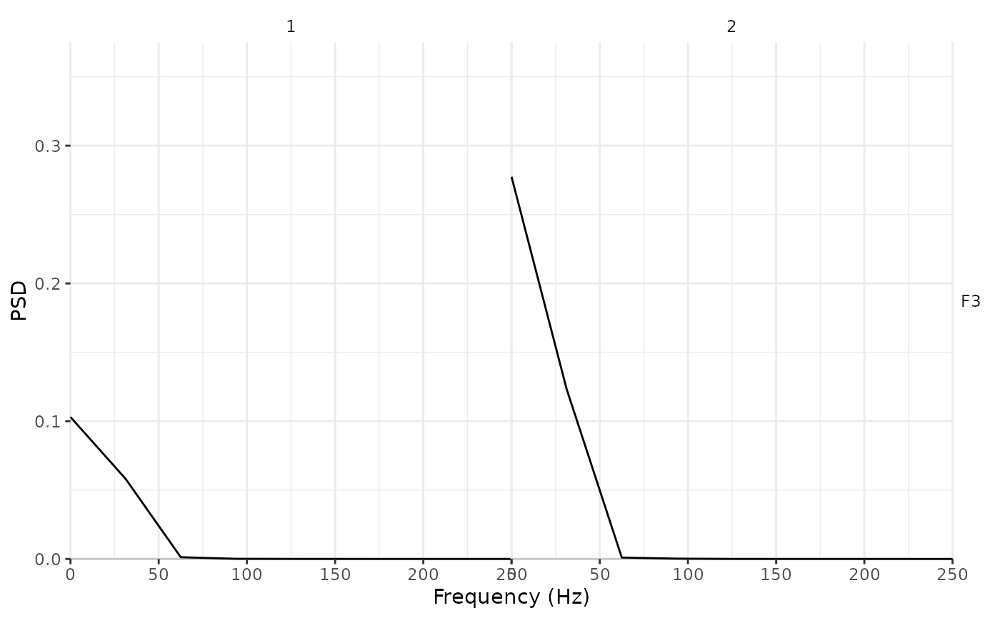

Compute the power spectral density (PSD) based on an eeg_lst object. For now it only uses Welch's method, so essentially it is a wrapper of the gsignal::pwelch function.
Arguments
- .data
A
eeg_lstobject.- .method
"welch" for Welch's method.
- .config
See gsignal::pwelch.
See also
Other frequency-based functions:
eeg_power_band()
Examples
psd_faces <- eeg_psd(data_faces_ERPs)
psd_faces %>%
eeg_select(F3) %>%
plot()
